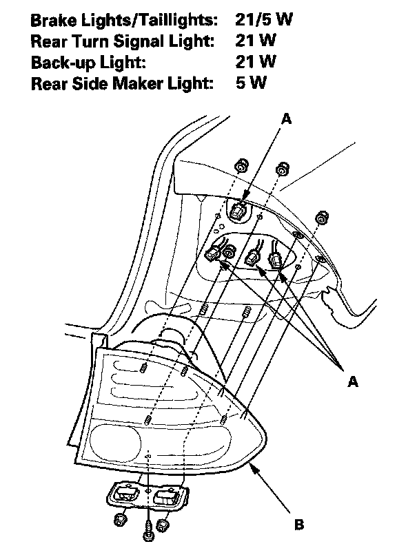

4-Door
Taillight Replacement4-door
1. Remove the rear bumper.

2. Disconnect the connectors (A) from the taillights (B).
3. Turn the bulb sockets 45° counterclockwise to remove the bulbs.
4. Remove the nuts and screws, then remove the taillight.
5. Install the light in the reverse order of removal.